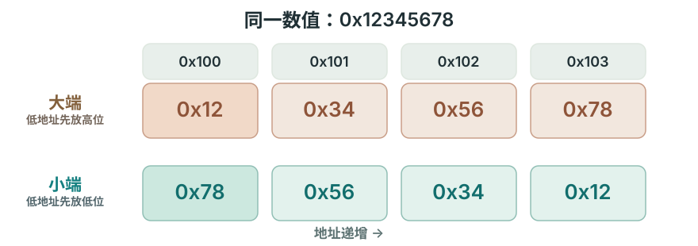
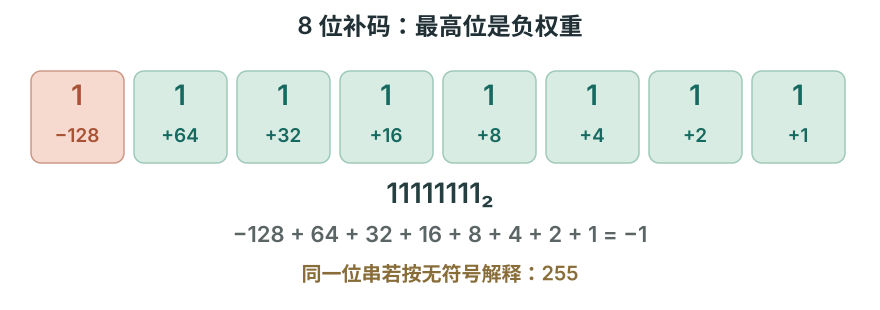
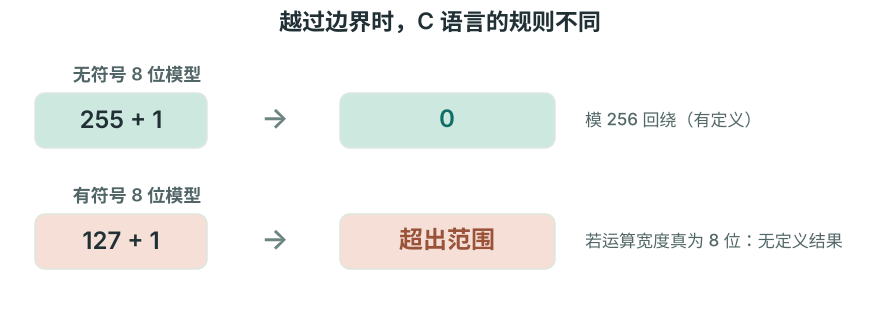

计算机系统 · 信息表示 / 02
同一串比特，为什么会有不同的答案？
把 11111111 当作 8 位无符号数，它是 255；当作 8 位补码，它是 −1。硬件并没有改动一个比特，改变的是我们为这些比特指定的解释规则。从这个小小的分歧出发，就能看懂字节序、类型转换与溢出。
本章采用 8 位玩具示例建立直觉，随后回到 C 的整数提升规则和真实的 32/64 位环境。示例中的宽度假设均明确标注。
2.1 数字不变，内存中的字节顺序却可以不同
想象内存是一排带地址的信箱。一个 uint32_t 数值 0x12345678 需要四个信箱，但究竟先放 0x12 还是 0x78？这就是字节序问题。高有效字节在低地址叫大端；低有效字节在低地址叫小端。两者表示同一个数学数值。

0x12345678。当代码只执行整数加法时，通常无需关心字节序；但序列化、网络协议、二进制文件和跨语言数据交换都必须约定字节顺序。网络字节序通常指大端，不能假设本机与协议一致。x86-64 采用小端；AArch64 系统常以小端运行，但不要把一种常见配置误写成所有 ARM 设备的必然属性。
/* C11；要求 uint32_t 可用且 CHAR_BIT == 8 */
#include <stdint.h>
#include <stdio.h>
#include <string.h>
int main(void) {
uint32_t x = UINT32_C(0x12345678);
unsigned char bytes[sizeof x];
memcpy(bytes, &x, sizeof x);
for (size_t i = 0; i < sizeof x; ++i)
printf("%02x ", (unsigned)bytes[i]);
putchar('\n');
}这段程序观察的是对象的字节表示，不通过不兼容指针类型进行重解释。在常见 8 位字节的小端机器上打印 78 56 34 12；在大端机器上则为 12 34 56 78。unsigned char 可以查看对象表示，但本例不意味着任意类型都可按相同方式安全反向转换。
2.2 补码：给最高位一个负权重
无符号数的每一位都贡献非负权重。对宽度为 w 的补码数，最高位的权重由 +2^(w−1) 变为 −2^(w−1)；其余位仍然照常求和。于是同一串 11111111 在 8 位模型中成为 −128 + 127 = −1。

8 位无符号范围是 0…255，8 位补码范围是 −128…127。补码中 −x 可以通过逐位取反再加一得到，但最小值 −128 在 8 位补码中没有对应的正值。不要把 8 位示例直接当成 C 的 char 的统一行为：普通 char 是否有符号由实现决定。
动一动：位模式不变，解释改变
默认示例和上图完整可读；拖动滑块只改变对同一组比特的两种解读，不改变任何真实的 C 变量类型。
2.3 C 语言的隐式转换：比较前先问“谁被转换了”
最容易出错的并非存储，而是表达式求值。对于典型的 32 位 int / unsigned int，-1 < 1U 为假：通常算术转换会把 -1 转成 UINT_MAX，然后执行无符号比较。不是无符号类型永远赢；具体规则取决于参与类型的整数提升结果、转换等级和可表示范围。
#include <stdio.h>
int main(void) {
int a = -1;
unsigned int b = 1U;
printf("%d\n", a < b); /* 常见 32 位 unsigned int：0 */
printf("%d\n", a < 1); /* 1，纯有符号比较 */
}阅读混合算术时，依次问：① 两个操作数是什么类型？② 是否先发生整数提升？③ 通常算术转换把它们变成哪一种共同类型？④ 最后才进行比较或运算。
还有一个常见漏洞入口：sizeof 的结果是 size_t（无符号整数类型）。例如循环变量是 int i 时，不要随意写 i < sizeof arr 而不思考比较结果与单位：sizeof arr 是字节数，不是元素个数；并且 i 一旦为负，可能先被转换成很大的无符号值。安全做法是让索引采用合适的 size_t，并使用 sizeof arr / sizeof arr[0] 计算静态数组的元素数。
2.4 溢出不是一种行为：无符号回绕 vs 有符号未定义
在 C 中，无符号整数运算以 2^w 为模；UINT_MAX + 1U 的结果定义为 0。相反，当有符号加法超出类型范围时，程序发生未定义行为。所以不能把 INT_MAX + 1 == INT_MIN 当作可移植的 C 恒等式，也不应先算出有符号和再检查是否溢出。

#include <limits.h>
#include <stddef.h>
#include <stdint.h>
#include <stdlib.h>
int checked_add(int a, int b, int *out) {
if (out == NULL) return 0;
if ((b > 0 && a > INT_MAX - b) ||
(b < 0 && a < INT_MIN - b)) return 0;
*out = a + b;
return 1;
}
void *checked_int_array(size_t n) {
if (n > SIZE_MAX / sizeof(int)) return NULL;
return malloc(n * sizeof(int));
}第二个函数先检查乘法再分配，是防止分配长度计算回绕的基本模式；返回非空也不意味着调用者可以越过所分配的元素范围。实际代码还应处理 n == 0 的业务语义。GCC/Clang 另有 __builtin_add_overflow 等扩展可用，但并非标准 C 接口。
2.5 小实验：拿证据替代猜测
将上面的例子保存为 endian.c，在目标平台运行 cc -std=c11 -Wall -Wextra -pedantic endian.c -o endian && ./endian；再试着把 0x12345678 改成 0x01020304。你会发现程序输出的是存储布局而不是“整数应该怎么读”。
推荐进一步用 -fsanitize=undefined（支持该选项的编译器）测试故意构造的有符号溢出，但不要把工具在某一次运行中的报告等同于 C 标准对未定义行为的保证。
自测
假设 w = 8，位模式 10000000 的无符号值与补码值各是多少？若把它加上 10000000，应如何分别描述无符号结果与 8 位有符号 C 运算？
查看推导
分别是 128 和 −128。无符号加法得到 0（模 256）；在只具备 8 位有符号运算宽度的抽象模型中，相加得到 −256，超出范围。注意真实 C 的 signed char 表达式通常先提升为 int，因此不能直接把这个抽象结论套在两次 signed char 加法上。
带走什么？
字节序规定字节的排列；补码规定比特的数值意义；C 的转换规则规定表达式按哪种类型计算；溢出规则规定结果是否还具有语言保证。下一章我们会看到：浮点数把“表示范围”与“表示精度”拆成了两个不同的问题。
资料与边界
本章的 8 位图示是教学模型，并非某种具体 ABI 的完整规定。参阅 CS:APP 3e 学生资源（第 2 章） 与 C 语言类型转换规则。具体 int 宽度、字节宽度与溢出诊断行为须以目标实现为准。